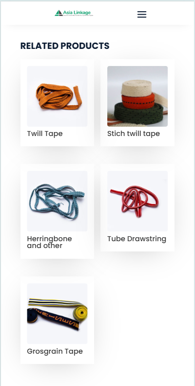
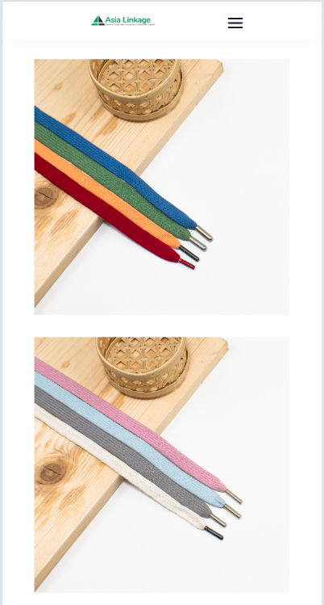
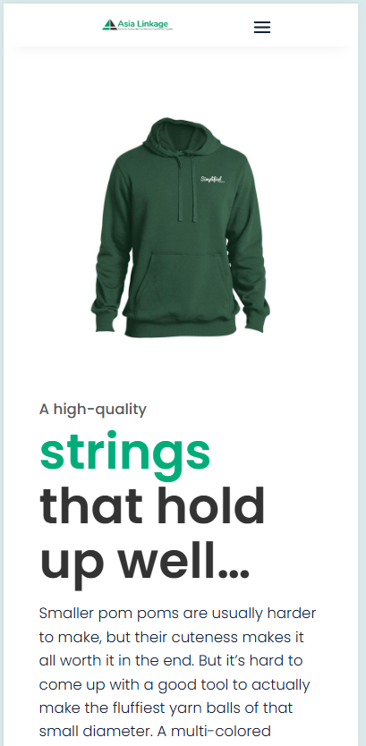
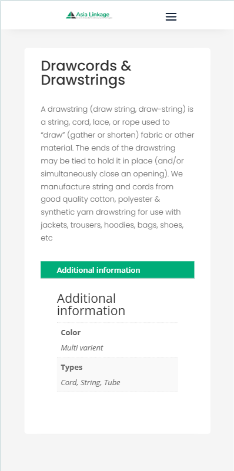
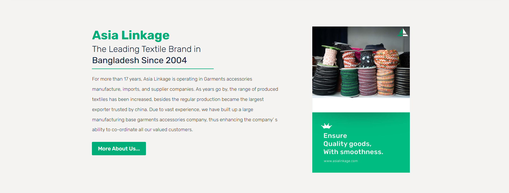
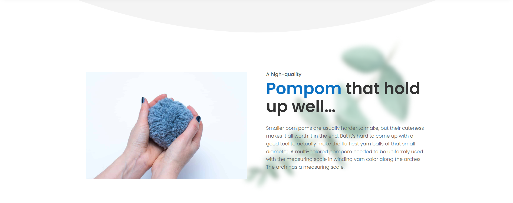
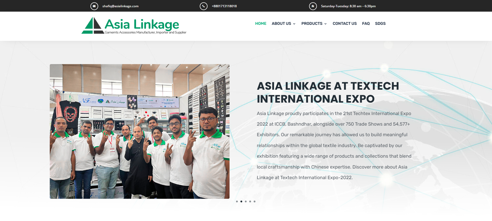
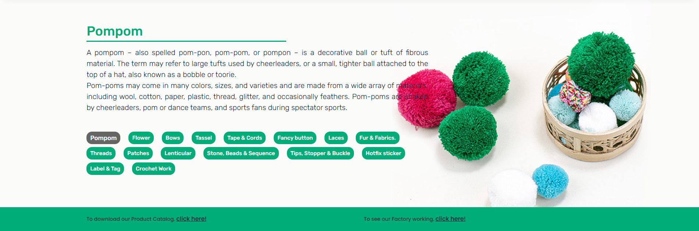

Default
Elev 2 surface, hairline border, contact shadow.
Case Study — Web
One line on what was built, and who it was built for.
How the work is made
One project, from the brief to what changed after it shipped. The frame stays quiet — the screenshots are the argument.
Weight is the hierarchy
One family. Emphasis comes from weight and scale alone.
One accent per view
A single colour marks exactly one thing on any page.
Claims get a number
Every claim in the brief is answered with a measurement.
The work is the colour
The frame stays neutral; the client’s brand supplies the colour.
Table of contents
02 — The Brief
The situation before the work started, and the single sentence this project answers.
Constraint
The limit that shaped the work — budget, legacy, or the date.
Audience
Who uses this, on what device, under what conditions.
Success
What the client agreed would count as success.
03 — The Solution
What got built, and the one idea it is organised around.
Primary view
Decision 01
The first structural call, and what it was chosen over.
Decision 02
The part of the build worth a second look.
Decision 03
What was left out, and why that was right.
02 — Color
Five colours carry the system. Only Signal Teal is an accent.
Derived states
Elevation ladder
03 — Typography
Hanken Grotesk
Brand · all UIAaBbGg 0123
JetBrains Mono
Technical · tracked 0.08emAaBbGg 0123
Fraunces
Editorial · reading onlyAaBbGg 0123
06 — Buttons
One primary per view. Secondary carries the rest.
07 — Project Card
On hover the surface climbs a rung and the border picks up the accent. Screenshots supply the colour.
Elev 2 surface, hairline border, contact shadow.
Rises to elev 3, teal border, wide ambient shadow.
Settles back toward the page on press.
08 — Device Mockups
Each screen slot is cut to the true device ratio — a shot exported at 393 × 852 lands without distortion.

Front — related products

Three-quarter left — product

Three-quarter right — gallery

Tilted — details
08 — Device Mockups
Tablet — portrait

Tablet — landscape, angled

Laptop — front
08 — Device Mockups
Devices share one baseline, so a responsive set reads as a single scene.

Desktop — 16:9

08 — Device Mockups
An img in the screen slot covers the
placeholder automatically — frame, angle and bezel never change.
Export at these sizes
Available angles
Markup
<div class="qo-device qo-device--phone qo-view--left">
<div class="qo-device__frame">
<div class="qo-screen" data-spec="393 × 852">
<img src="sites/Bancat/home-mobile.png" alt="">
</div>
</div>
</div>
Recline
Isometric
Tablet tilt
09 — Tech Stack
Drop a logo into any well, then name the tool and the job it does.
Tool name
Role
Tool name
Role
Tool name
Role
Tool name
Role
Tool name
Role
Tool name
Role
Tool name
Role
Tool name
Role
Tool name
Role
Tool name
Role
09 — Results
Measured against the success criteria on the brief.
Delivered
What I’d do next
The honest follow-up — what a second phase would tackle first.
End of document
Every value here resolves from tokens.css —
change a token and the whole document follows.